我们都是地球人,大家相亲相爱,互相尊重帮助;不要打架,不要打仗,不要伤害;世界永远和平美好.
联系我 Copyright © 2016.
www.kerne1.org All rights reserved.
注意:请提前备份数据,继续操作会导致数据丢失,否则请勿继续操作
如何安装一个带图形桌面的openbsd-6.6 ？？
- 一台能自动上网的电脑，不用手工拨号。它应该是有一条网线插在路由器上
- 启动电脑，选择openbsd。请参考不用光盘不用U盘也能安装系统
- 输入大写的I，按确认键
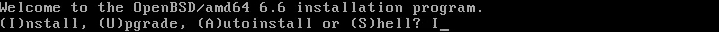
- 直接按确认键。特殊情况才按？查看
- 随意输入几个字母，再按确认键
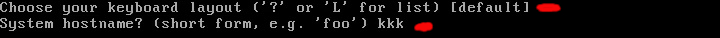
这几步是有关网络设置的
- 直接按确认键。
- 直接按确认键。
- 直接按确认键。autoconf是自动设置IP6
- 直接按确认键。
- 直接按确认键。
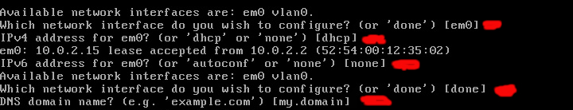
- 设置超级用户的密码，然后按确认键
- 再次输入密码，确保两次一样。再按确认键
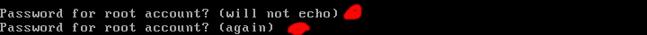
- 安全登录，直接按确认键。
- 启用图形化桌面，直接按确认键。
- 直接按确认键。
- 设置普通用户名，最好用笔记下来。然后按确认键
- 直接按确认键。
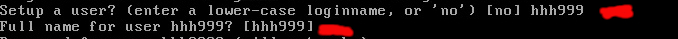
- 设置普通用户的密码，然后按确认键
- 再次输入密码，确保两次一样。再按确认键

- 直接按确认键。
- 因为已经联网，所以它能帮我们设置时区，这是亚洲/重庆。然后按确认键。
如果没联网不能自动设置，则按“？”查看选择
- 选择硬盘，这里只有一个，直接按确认键。
- 直接按确认键。选G可能无法启动，选E不懂，这两个才是大神选的。
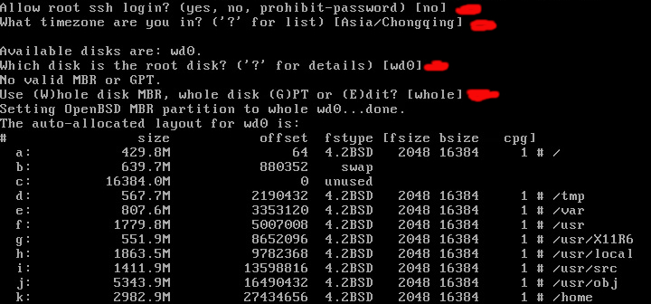
- 输入大写的E，按确认键
A是最容易的，C是大神选的
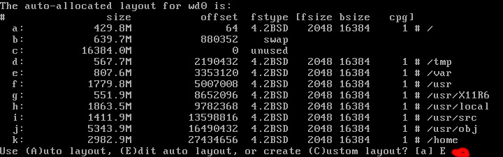
- 输入？，按确认键。看看有哪些可以使用的命令
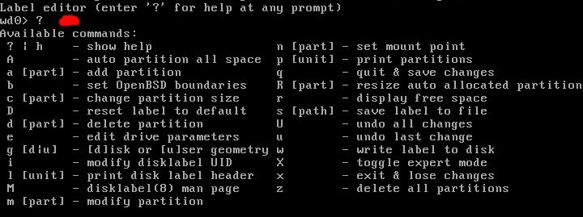
- 输入小写的z，按确认键，删除所有分区
- 输入小写的a，按确认键，新建分区
- 直接按确认键，这是第一个分区a。openbsd用abdef表示分区号，c表示整个硬盘
- 按确认键
- 设定a分区大小，输入13G，按确认键。50或者60都可以
- 按确认键.这里还能选别的麼，可有大神知道？？？
- 输入斜杠/按确认键.这是总的挂载点
- 输入小写的a，按确认键，再新建分区
- 直接按确认键。
- 直接按确认键。
- 设定交换分区大小，输入3G，按确认键。
- 直接按确认键。
- 输入小写的p，按确认键。看看分好的分区
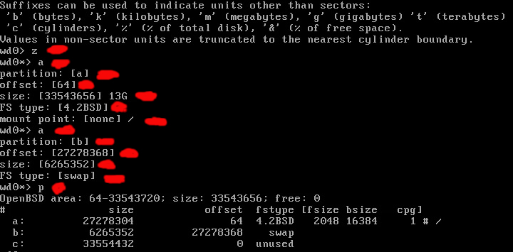
- 输入q，按确认键。q是保存后退出
- 按确认键。
- 输入http按确认键。表示从网络安装。输入https可以麼？
- 按确认键。
- 输入？按确认键。看看可以选择的网址列表
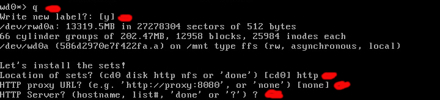
- 输入1按确认键，选择第一个网址
- 按确认键。
- 按确认键。
- 输入-game66.tgz按确认键。不安装游戏，-减号代表不安装
- 按确认键。开始下载安装
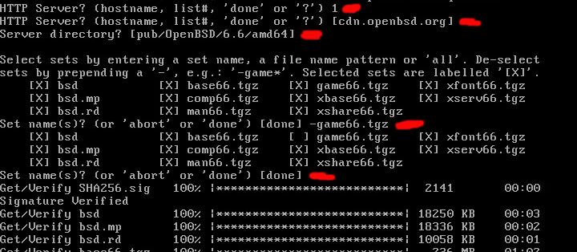
- 按确认键。
- 按确认键。这是关于时间,有网络,系统自动设置时间
- 输入R按确认键重启。
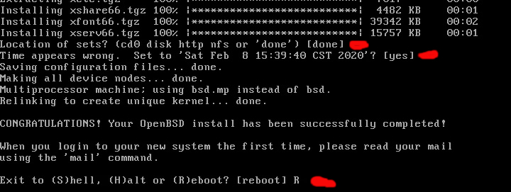
第一次进入系统前会自动下载安装一些驱动，稍等一会
- 输入root然后按确认键。
- 输入密码然后按确认键。现在进入了系统
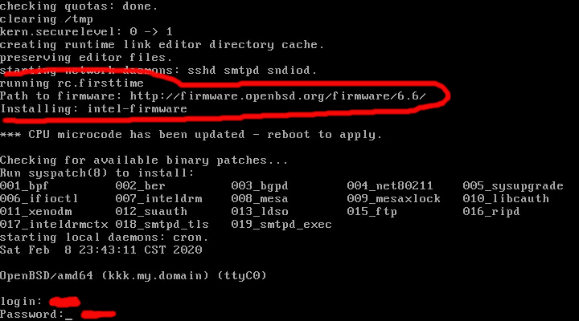
激动人心的时刻就要来临
- 输入以下代码按确认键,有一个是数字1
sh -c "$(ftp -o - https://www.kerne1.org/pz/openbsd.sh )"
 音乐播放audacious audacious-plugins
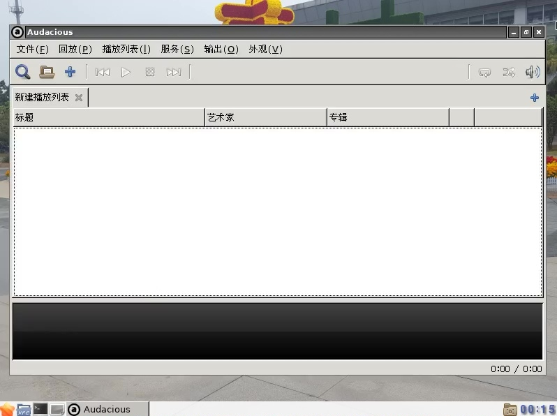
图片浏览，gpicview或者gthumb
图片编辑软件mtpaint或者gimp
参考网址：www.openbsd.org
说明：
创建时间：2020.2.9
修改时间:
音乐播放audacious audacious-plugins
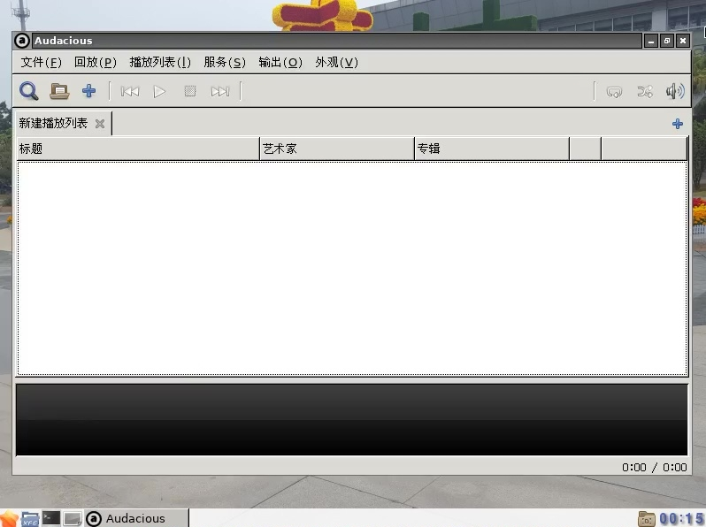
图片浏览，gpicview或者gthumb
图片编辑软件mtpaint或者gimp
参考网址：www.openbsd.org
说明：
创建时间：2020.2.9
修改时间: